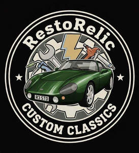

Trade Mark Journal No.2026/009 27 February 2026
UK00004340140 12 February 2026 (25,37,38)

- Class 25
- Clothing; Knitwear [clothing]; Jackets [clothing]; Ready-to-wear clothing; Garments for protecting clothing; Linen clothing; Headbands [clothing]; Gloves [clothing]; Clothes; Aprons [clothing]; Kerchiefs [clothing]; Denims [clothing]; Shorts [clothing]; Leather (Clothing of -); Leather clothing; Hoods [clothing]; Windproof clothing; Embroidered clothing; Wristbands [clothing]; Belts [clothing]; Rainproof clothing; Waterproof clothing; Casual clothing; Jackets being sports clothing; Bottoms [clothing]; Ready-made clothing; Leisure clothing; Clothing for sports; Sports clothing; Athletic clothing; Tops [clothing]; Weatherproof clothing; Men's clothing.
- Class 37
- Garage services for vehicle maintenance; Garage services for vehicle repair; Garage services for automobile repair; Garage services for the maintenance and repair of motor vehicles; Garage services for motor vehicle repair; Car valet services; Services for the maintenance of windows in vehicles; Automobile service station services; Vehicle repair services; Mechanic services; Vehicle washing services; Services for the maintenance of windscreens in vehicles; Vehicle upholstery and repair services; Services for the maintenance of motor vehicles; Vehicle service station services [refuelling and maintenance]; Services for the repair of motor vehicles; Motor vehicle repair and maintenance services; Motor vehicle maintenance and repair services.
- Class 38
- Streaming of video material on the internet; Streaming audio and video material on the Internet; Video broadcasting; Video uploading services; Broadcasting of video and audio programming over the Internet; Video teleconferencing; Streaming of audio material on the internet; Video, audio and television streaming services; Video conferencing; Transmission of video films; Transmission of videos, movies, pictures, images, text, photos, games, user-generated content, audio content, and information via the Internet; Audio and video broadcasting services provided via the Internet; Transmission of audio and video content via satellite; Video on demand transmissions; Transmission of audio and video content via ISDN lines; Transmission of audio and video content via computer networks; Broadcasting of motion picture films via the Internet; Transmission of video by means of the Internet.
Benjamin Michael Gardiner